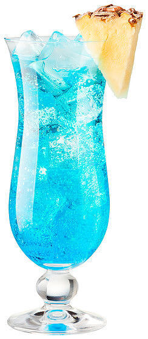

Голубая лагуна

Есть легенда, что «Голубую лагуну» придумал художник Поль Гоген на Таити.
Но на самом деле рецепт в 1960 году придумал бармен Энди МакЭлхон. «Голубая лагуна» – это термальный
курорт в Исландии, где когда-то побывал МакЭлхон. Цвет полученного коктейля напомнил ему увиденные там красоты.